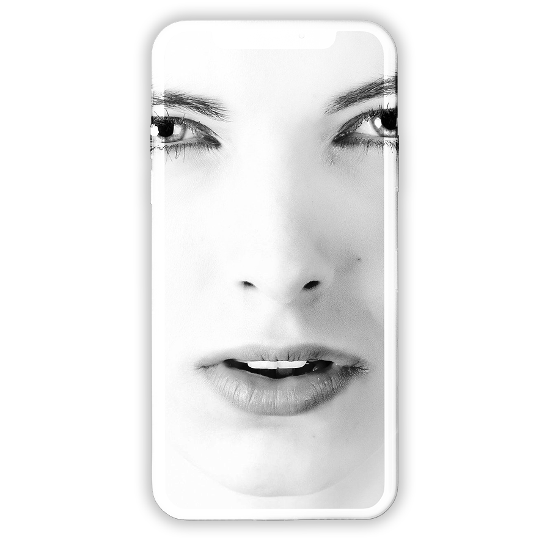
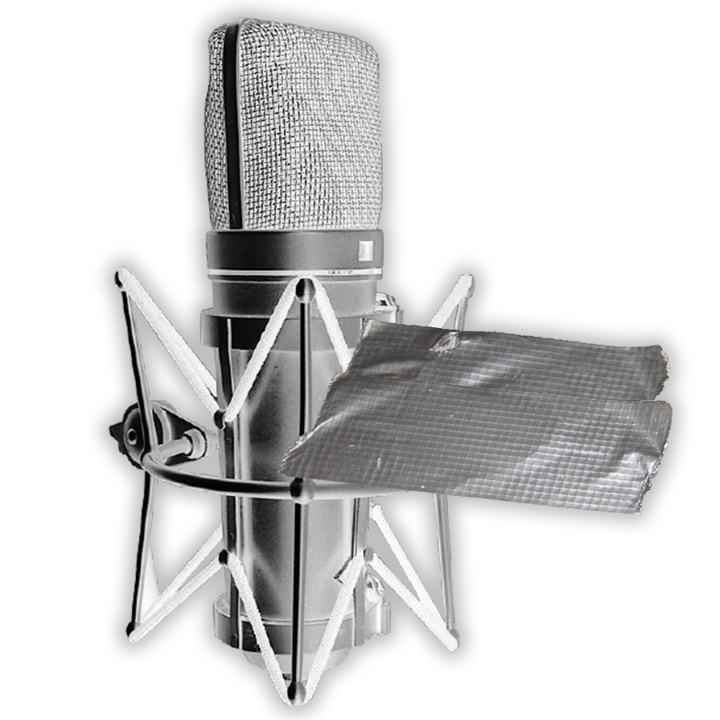
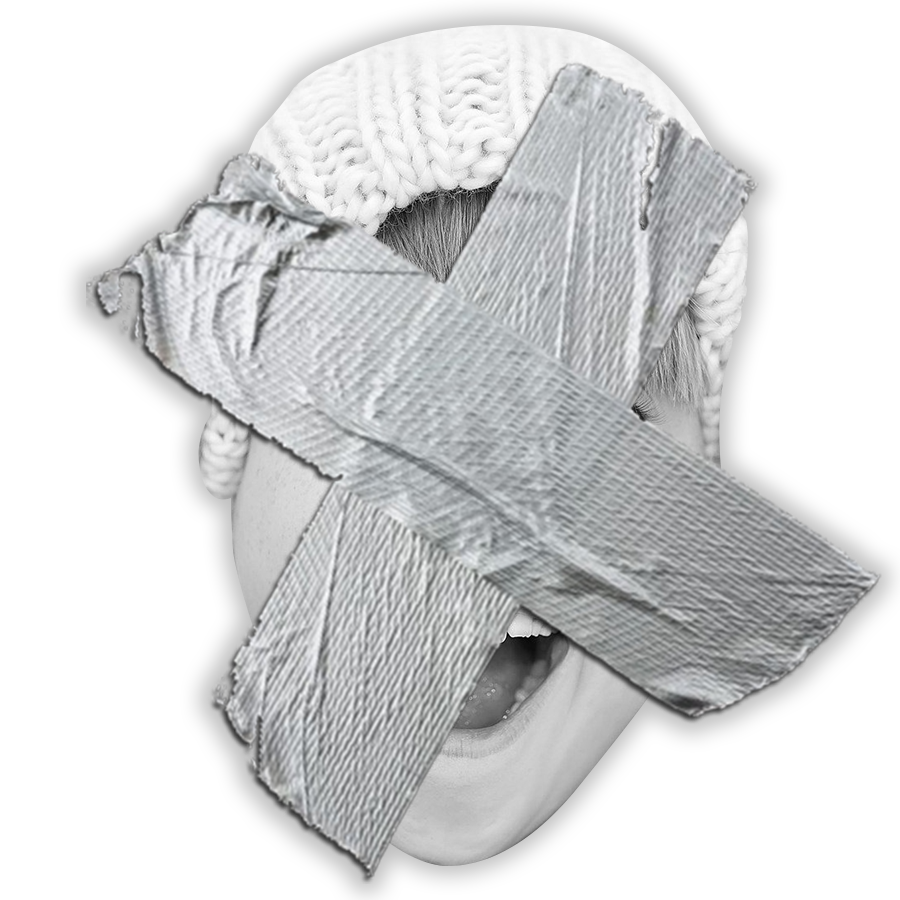
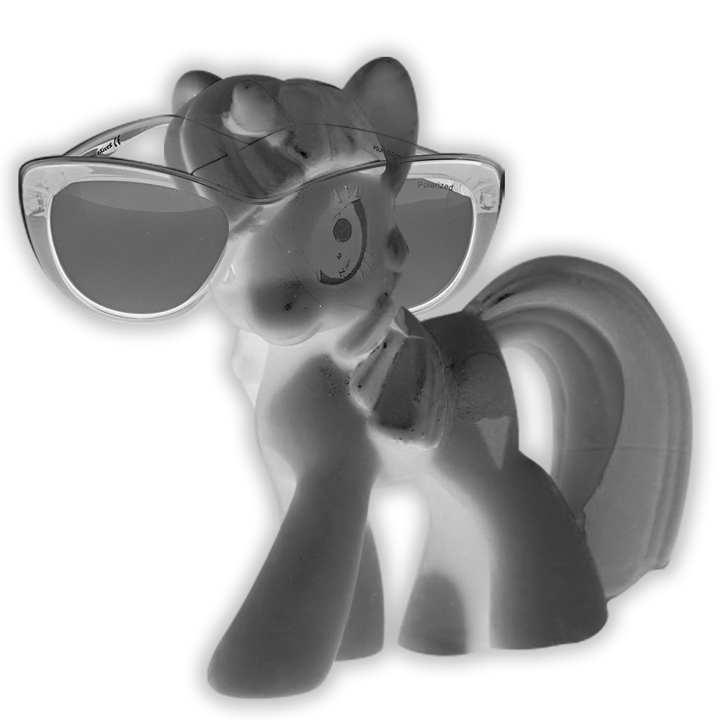
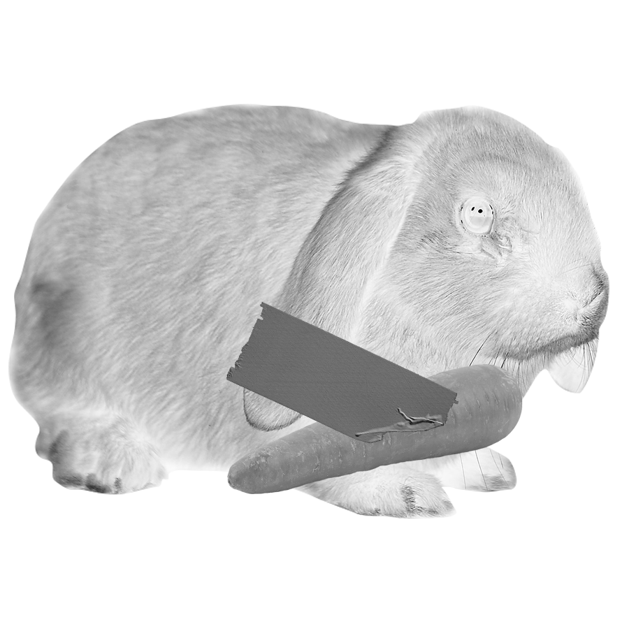
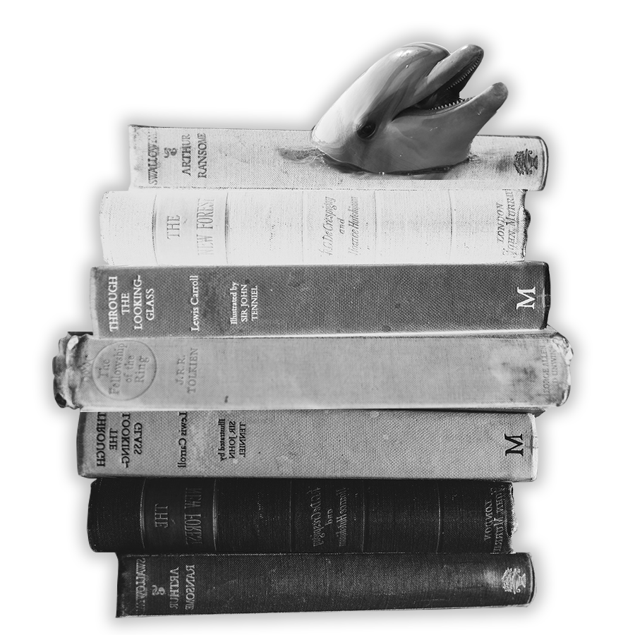

01확✳신의 아이폰상
00:30
안녕하세요 전 맥북을 쓰지만 🆖 갤럭시 유저인, 네 맞습니다 혼종입니다!
22년 외길 인생 갤럭시의 품을 떠나본 적이 없지만 아이폰을 사용할 것 같다는 말을 많이 들었답니다. 혹시 칭찬인가요?
디자인과 학생 같다 그런.. 말일까요..? 슬슬 광대가 올라가네요 차갑고 무뚝뚝해보여도 은근 리액션이 풍부한 사람이 바로 접니다. 아, 물론 갤럭시를 사용하고 있긴 하지만 애애애애애애플🌟페이 한국 도입만을 기다리고 있어요.^^
ㅎr 제발..애플 pleaZe..✴ ❇
02인디밴드 보➰컬
02:00
정말 행복하고 복에 겨운 첫인상이지만 그렇습니다. 동기들 통해서 처음 듣게 되었는데,인디 장르에서 보컬🎤로 활동하고 계시는 분을 닮았단 이야기를 들었습니다...정말 부끄러워서 실명은 언급하지 않겠습니다.. 그치만 질문하시면 대답하 -
죄송합니다 참아주세요


03남자친구 있지❤
04:10
네?
없어요 그냥 아니 그냥 없어요.. 할 말이 많아 4분이나 넘는 곡으로 질질 끌게 되었습니다. 심리테스트를 워낙 좋아해서 연애 분야도 해봤는데 눈이 너무 높다는 말이 자꾸 나옵니다. 만나더라도 이상형을 만나고 싶으니 이번 생에 연애💩는 포기하렵니다^^
04앗차가워신비주의인가말도못걸겠어
03:52
제목이 좀 길죠 실감나게 표현하기 위해서 주루룩 써봤습니다. 워낙 첫인상만으로는 말도 걸지 못하겠고.. 넘나 차갑🗿고.. 옆에 있다가 스르륵 사라져서 신비주의🦄 컨셉인가 싶고 하지만 일명 🔜‘3초 첫인상’🔛이라는 별명도 붙은.. 무장해제 인간입니다. 말만 걸어주면 해맑게 인사하는 건 기본, 자동 응답기마냥 반응🎉도 텐션 높게 나와서 첫인상이 주는 벽을 와장창 깨버립니다 !
말... 걸어보실래요...?

05프로✒작업러
01:00
과제를 정🔥말 열심히 할 것 같다는 인상을 가지고 있습니다. 음 사실 이건 외면이나 내면이나 똑같아요. 노력에 노력을 더하고 책임을 무겁게 지려는 타입인지라, 정말 가벼운 과제라도 많은 시간을 투자하고 심혈을 기울여 제출🔫한답니다.. 그럼 이 앨범도,..? 싶다면 크나큰 오예입니다.
알아주셔서 감사합니다 hoho :-D
06 Title아기토끼✌
05:00
이런 첫인상을 남겼다니 괜히.. 부끄럽네효^^
이런 인상으로 기억해주신 김모양이 해주신 말을 그대로 인용하며 설명을 대체하렵니다 악악 omg 쏘 러블리 걸의 말...
“만나기 전엔 귀여운 아기토끼인줄 알았는데..! 키크고 예분 어른토끼엿허.” 사랑합니다 (하트)
유사한 첫인상으로 “말랑폭신 아기고양이”라고 말씀해주신 선모양께도 사랑💌을 전합니다 -


07똑순이
02:59
이렇게 되고 싶어서 노력🏃중입니다 ! 첫인상이 이렇게 남았다니 너무 감사하고 행복🏋해서 키워드를 중심으로 적어두려 합니다 .. (그저 행복) 열심히 노력해보겠습니다 지켜봐주세요 !!!
“슈퍼 꼼꼼” “맡겨진 일 잘할 것 같은 이미지” “멋진 선배”